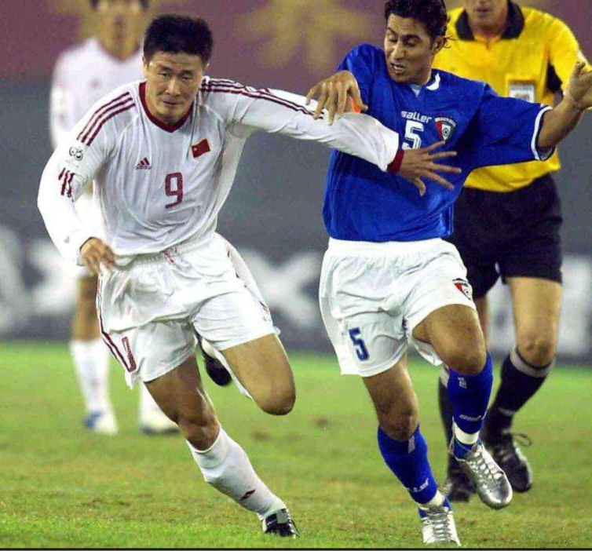
Haidong Hao is one of the best strikers in the history of both Dalian and China, known as "Chinese R9"
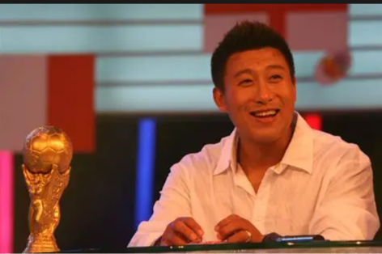
Nenhua Zhang is the captain of both Dalian and Chinese team, he is one of the best defenders in China at that time and he received many respect from not only his teammates but also his opponents.
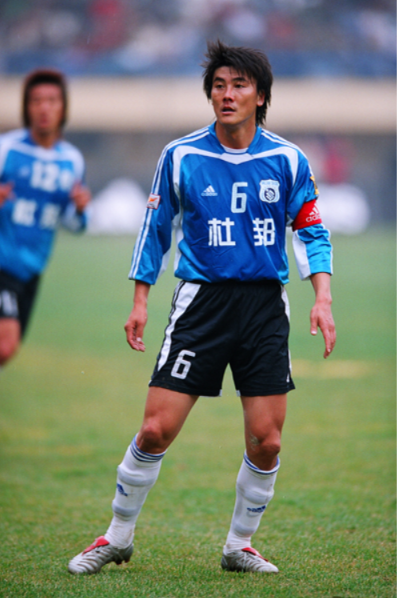
Ming Li is a legendary midfielder for Dalian, he was called "Chinese Beckham" for his exceptional long pass and handsome looking.
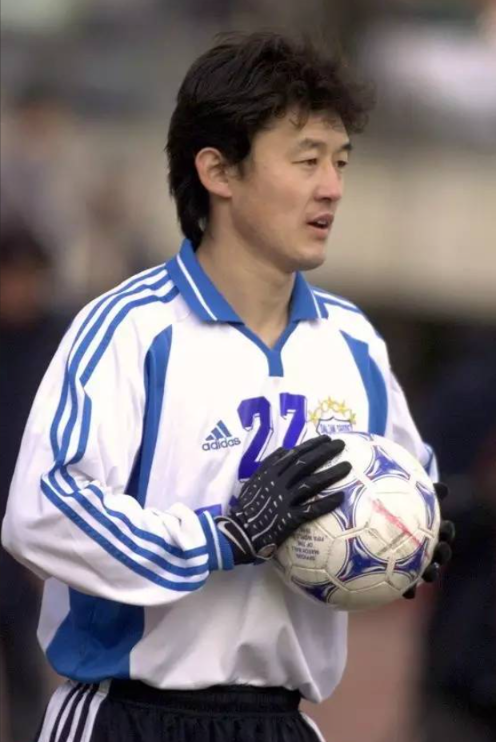
Jihai Sun is one of the best football player in Chinese history, he is also a legend of the ManCity in England. He scored the very first goal of Chinese people overseas. The most famous things for him is that he stopped a 1vs4 attack by Liverpool and the successfully defeated Cristiano Ronaldo and Henry.
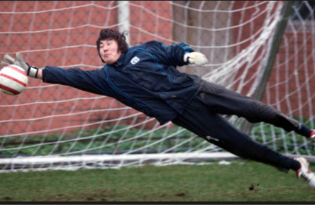
Dong Chen is one of the best goalkeepers in the history of Dalian. He is the manager of Dalian Yingbo Football Club now.
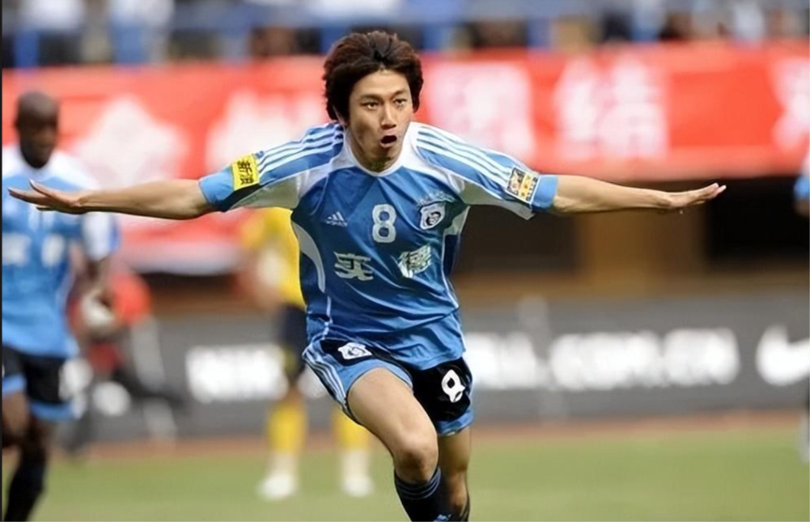
Although Ting Zhu is not a genius, he used his hardwork and dedication to become a legend of Dalian. He's also one of the few people who has been able to stand on his own through all the years of turmoil in this city. He jokingly called himself the 'watchdog of the city,' showing the inspiring spirit above his hometown.
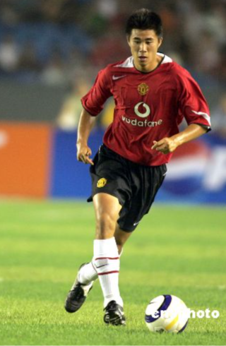
Fangzhuo Dong is the only Chinese player who has a champion league championship medal. He was willing to risk his entire career just to participate in the Olympics. He scored China's first goal in Olympic football, but his career was ruined as a result.
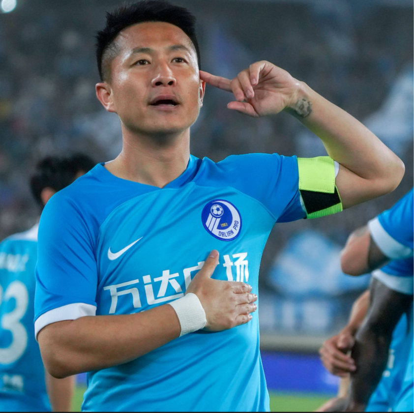
Xiangchuan Yan severed for 3 different teams of Dalian. When Dalian Yingbo met its financial difficulties in 2022, he uesd his own savings to support the club for several weeks. He is the second coach of Dalian Yingbo Football Club team B now.
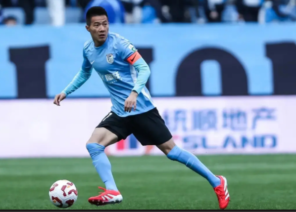
Peng Lyu is the only player who has lived through 3 parts of Dalian modern footall. He served for 4 different football club in Dalian, making him a legend of the city. He is the first captain of Dalian Yingbo Football Club now.
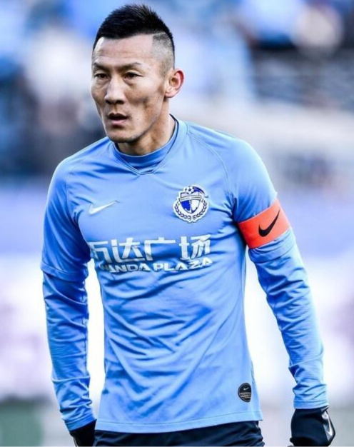
Ting Zhou is called "China's Pepe" because of his extremely aggressive and bloody style of playing and his hot temper. But he's always the first to stand out for his teammates. People remember him because he willingly shares the pressure with his coach and teammates when things aren't going well. He is the head coach of Dalian Yingbo Football Club B team now.
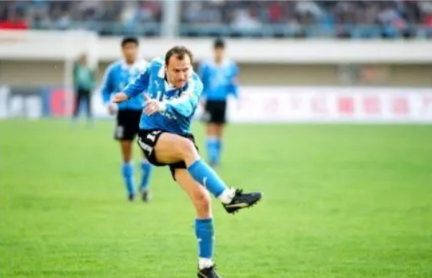
Václav Němeček is a Czech former professional footballer. He is one of the first foreign player to play in China League One. He is also the captain of Czech National Team.
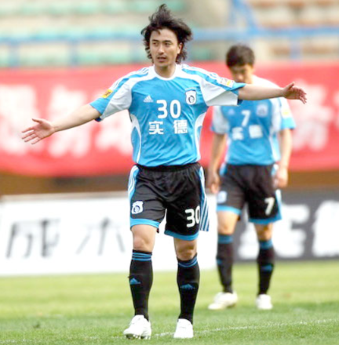
Ahn Jung-hwan is a former South Korean professional footballer. He served his last time of his career in Dalian. Although he is a foreigner, he considered himself as a person of Dalian for he has a Dalian wife.
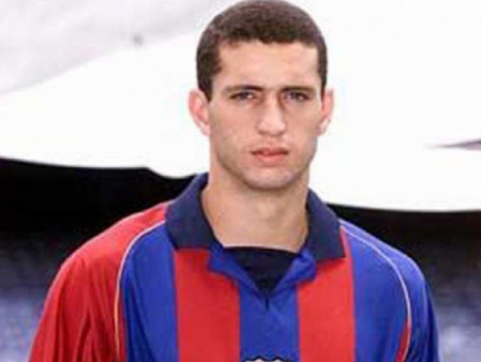
Fábio Rochemback is a Brazilian former professional footballer who played as a midfielder. He translated directly from Barcelona to Dalian, representing that Dalian first time had a world-class player.
Seydou Keïta is a Malian former professional midfielder. Following Rochemback's step, he also joined Dalian and became one of the club's key players.
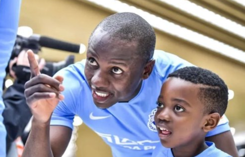
Nyasha Mushekwi is a Zimbabwean professional footballer who plays as a forward. He is welcomed for his great physical fitness, archery and long career life. He still play for Dalian now even at the age of 39. He plays in Dalian Kuncheng FC in the China League One, making himself part of the city's football.
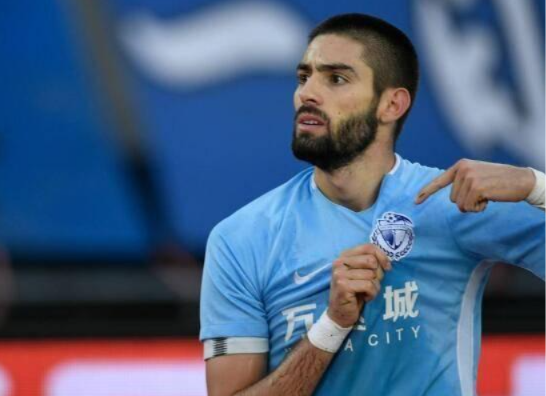
Yannick Carrasco is a Belgian professional footballer who plays as a left midfielder. He was the peak of individual skill in Dalian's football history and truly a world-class player. Because Wanda Group acquired part of Atlético Madrid, they were able to bring him and Gaitán to Dalian during the Jinyuan era. In the Chinese Super League during the Jinyuan era, Dalian wasn’t a wealthy club, and it was almost solely thanks to Carrasco that Dalian managed to avoid relegation.
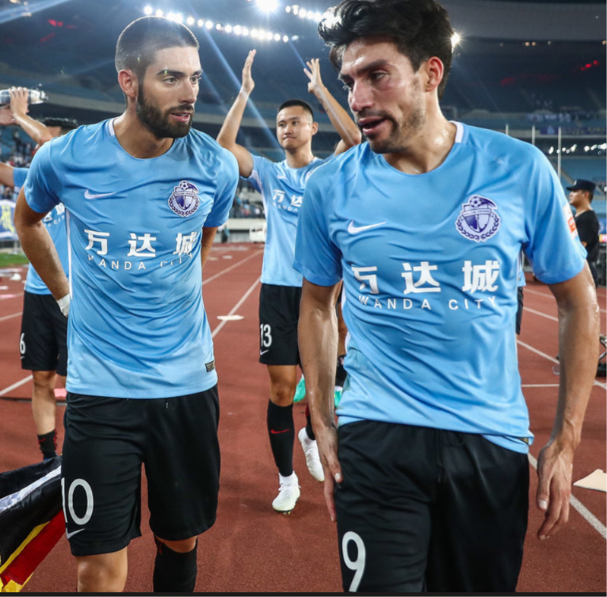
Nicolás Gaitán is an Argentine professional footballer who plays as an attacking midfielder or winger.As someone who was able to make the Argentine national team and play alongside Messi, Gaitán's individual skills speak for themselves. Limited by the coach's tactics, his stats at Dalian weren't great, but his ability to switch from defense to attack and his delicate passing skills are irreplaceable, even by Carrasco.
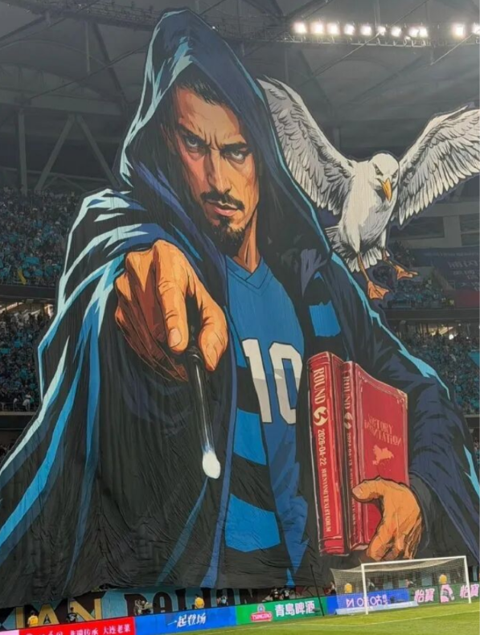
Nicolae Stanciu is a Romanian professional footballer who plays as an attacking midfielder or a winger. As the biggest-name foreign player in the post-Jin Yuan era of the Chinese Super League, Stanciu joined Wuhan in the CSL in 2022 and helped them pull off a Kaiserslautern-style miracle. After an unpleasant stint at Genoa in Serie A, Stanciu signed with Dalian this past winter. As the most high-profile foreign player in Yingbo's history, he quickly silenced doubts about his age and form, winning over the picky Dalian fans with his exquisite long shots, passing, set-piece skills, and leadership that perfectly matched the city. In this year's two Liaoning Derbies, he scored two stunning goals—using his left foot in one match and his right in the other—helping the team win both times. Before the second derby, Dalian fans even made a solo tifo for him that Messi or Ronaldo would struggle to get. Stanciu isn't the most famous foreign player in Dalian's history, but he is definitely the foreign player with the longest continuous impact. As the team's vice-captain and effectively the captain in most cases (since Peng Lyu currently doesn't play much), his pre-match pep talks and videos have become a must-watch daily for countless people in Dalian.
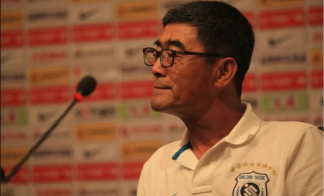
Honggen Zhang was a Chinese international football player and coach. He led the Dalian team to win the first professional league championship since the start of professional football in China.
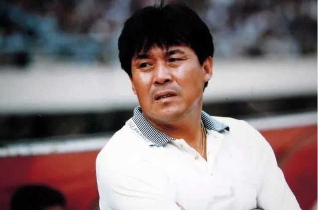
Shangbin Chi was a Chinese football player and coach. He led Dalian to win the first double championship since the professionalization of Chinese football and created the miracle of Dalian going unbeaten for 55 consecutive matches. He also led the team to win two runner-up titles.
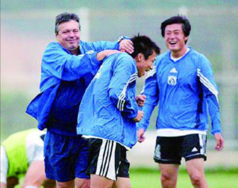
Milorad Kosanović was a Serbian football player and manager. After the Chinese Super League was restructured, Dalian's performance declined a lot due to economic and political reasons. Kosanović used his experience to help Dalian win back 2 league titles and 3 cup championships in just 5 years. His biggest contribution to Dalian was setting up a youth training base there, which has been praised as the "La Masia of China".
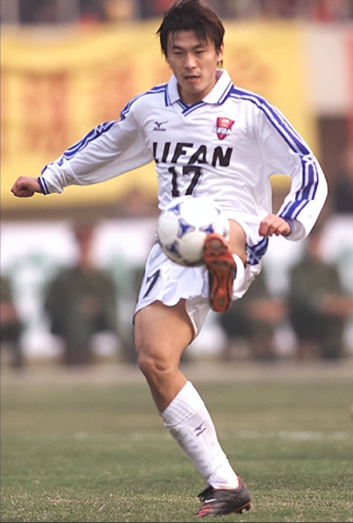
Guoxu Li led the young Dalian Yingbo to accomplish the remarkable feat of three leaps in three years. Since the team was founded in 2021, he has been the head coach, up until today. Despite being the second-lowest spender in the Chinese Super League, Dalian Yingbo still holds onto the hope of winning the championship and is the only team in the league that can compete for a double crown. Guoxu Li is 100% from Dalian. He played for Dalian during his playing days and was later loaned to Boca Juniors for a year. Because the player lineup wasn't top-tier in the CSL, his initially very pragmatic defense-and-counterattack tactics were criticized as ugly. Later, as the team gelled, he increasingly pursued possession-based tactics similar to Manchester City's, achieving excellent results after the 2026 World Cup. He also mentioned himself, 'My idol is Guardiola, and I hope to play the kind of football he does.'
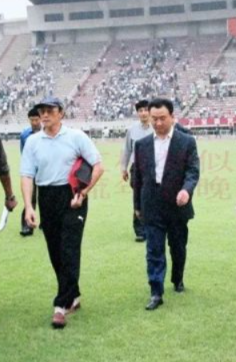
As the first-generation investor in Dalian football, he created an almost unreplicable dynasty. More than 20 years later, when Dalian football ran into trouble, he practically saved another team without worrying about the cost.
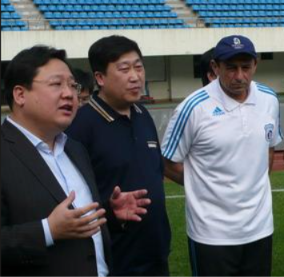
As a latecomer, Ming XV invested most of his money in building a youth training base, which was undoubtedly a brilliant move. In the 2000s, he created the last peak in Dalian football so far. However, he was also criticized for interfering too much in the team's tactics and strategies, and as a businessman, his close ties with politics indirectly led to the downfall of Dalian's first-generation team.
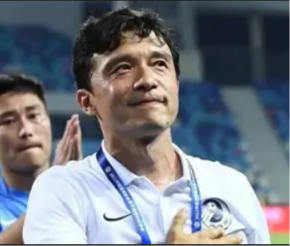
The young Dalian Yingbo faced an economic crisis shortly after it was founded. Kui Wang, who was rejected from the first generation of Dalian youth training when he was young, almost entirely out of love became the new investor in the team. His business wasn’t very big, and the future was uncertain, but he stuck with it until today, right up to the day when Dalian football is nearly revived.